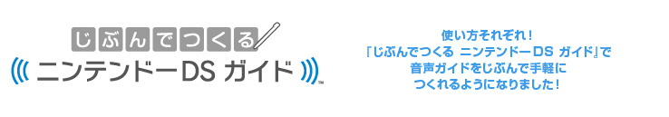
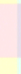
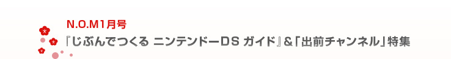

今回のN.O.Mは、写真と音声を組み合わせた音声ガイドを簡単に作成できるニンテンドーDSiウェア『じぶんでつくる ニンテンドーＤＳ ガイド』と、Wiiから出前をとることができる「出前チャンネル」をご紹介します！
『じぶんでつくる ニンテンドーＤＳ ガイド』は、DSiのカメラで撮影した写真に、DSiのマイクで録音した音声をつけたデータを自分でつくることができる無料ソフトです。つくったデータはニンテンドーDSシリーズすべての機種に無線で送信できます。アートの展覧会や水族館など、すでにさまざまなイベントや施設で活用されています。
「出前チャンネル」は、文字どおりWiiからインターネット経由で直接お食事の出前をとれるサービスです。Wiiに登録された住所に配達可能なお店がメニューのジャンルごとに一覧表示されるので、食べたいものをすぐに注文できます。家族やお友だちとゲームを楽しんでいる間に出前が届くのは本当にラクチンです！